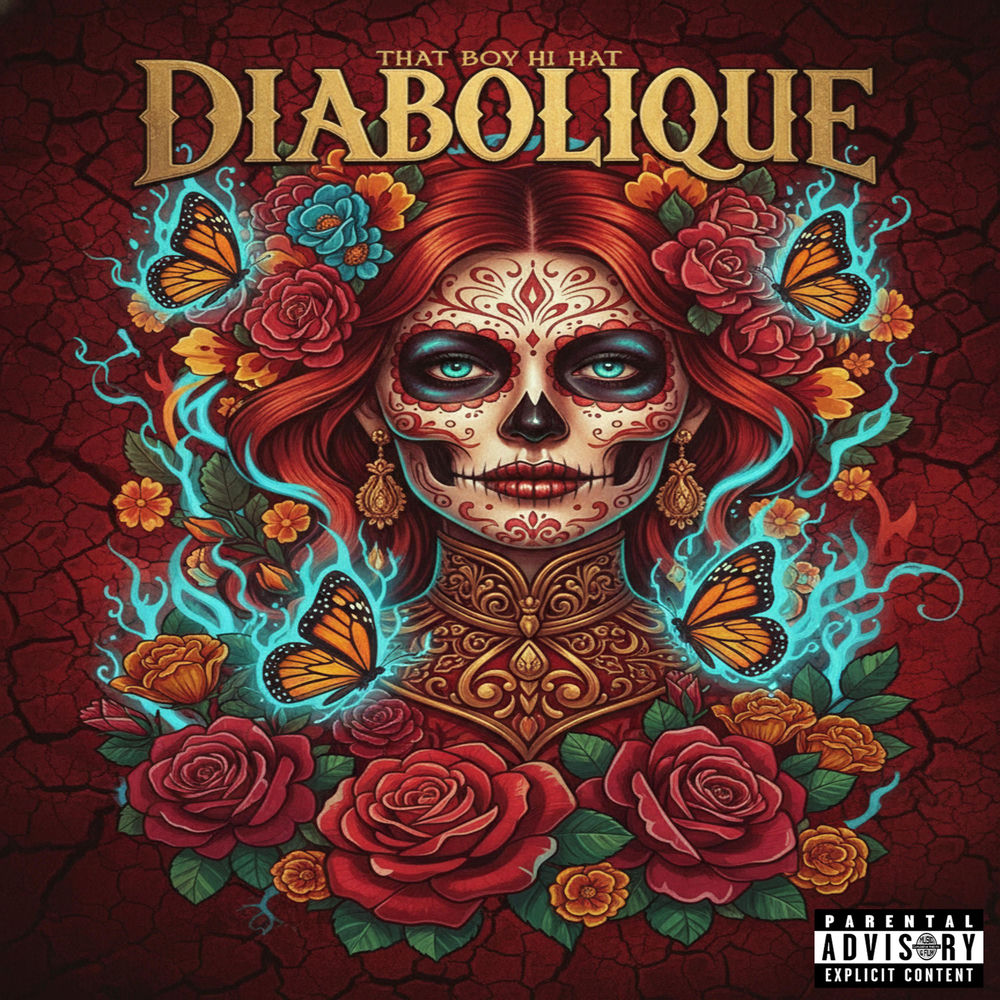

Radio
Cumulative Radio 365 — our station for independent artists and producers. Alternative, indie and hip-hop, on air 365 days a year.

Now playing
Connecting to the station…
Listen everywhere
Cumulative Radio 365 is listed in the directories below — pick your app:
Streamitter TuneIn Live Online Radio
radio-browser.info (find it in VLC, Kodi and radio apps) · Radio Garden · Station website
Run by agents, proven in public
This station is operated by the CWI agent team. Every claim below is verifiable — no vanity metrics:
- On air right now — programmed 6-hour rotation, HLS, 128 kbps AAC. Direct playlist
- Listed on Streamitter, TuneIn and Live Online Radio
- Airable — added to their station database on 2026-09-30
- OnlineRadioBox — station request approved 2026-10-01, directory listing live within 24 hours
- Live now-playing — this page shows the actual track on air with its real cover art, computed from the program schedule
Artists: get your music on air
Independent artists and producers can submit tracks for rotation. Free submissions, rights attestation required.
Submit your trackAbout Radio 365
Radio 365 is the official streaming station of Cumulative Web Inc, broadcasting independent music 24 hours a day, 365 days a year. The rotation features That Boy Hi Hat's full catalog alongside Black Lansky's productions and the complete CWI roster — 183 Wilboi, Dre50, Greg Porn, King Ahkeem, Fleekz, and Omgbarz.
The station streams in HLS format for maximum compatibility across phones, browsers, smart speakers, and radio apps. Independent artists interested in airplay can contact the label — submissions are free and every track is reviewed by the CWI team.